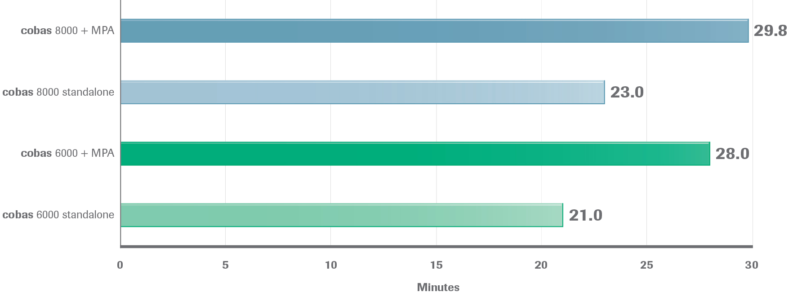

Roche’s TnT Receipt-to-Result (9 Minute Assay) 18
Customers with cobas 8000+MPA data show that they can turn around a Troponin T STAT assay in approximately 29 minutes, receipt-to-result.
A customer that has a standalone 8000 and therefore centrifuges offline and front loads the specimen, is averaging a 23 minute turn-around time receipt-to-result.
cobas 6000 customers +MPA report a turnaround time receipt-to-result of approximately 28 minutes.
When using the 6000 as a standalone, they are experiencing a turn-around time of approximately 21 minutes.